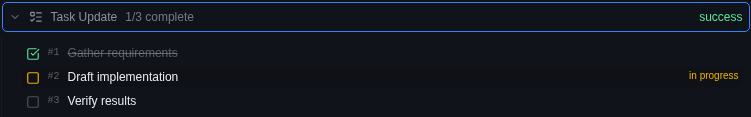
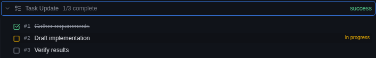
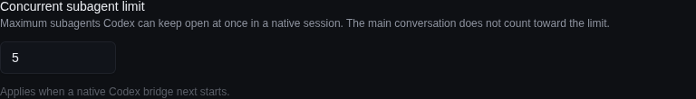
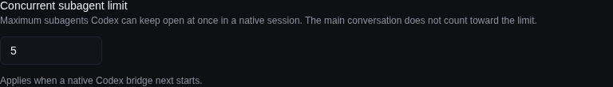

Design tasks / 00011
00011 · Remove alpha fades from status text
Problem
The baseline had 21 uses of text-muted-foreground at 60% opacity or less,
including a pending todo item’s state. Readable state text needs the full muted color.
Disabled controls can use a lower opacity.
muted-foreground. 11px
in muted-foreground (6.1:1) … never fade it further with an alpha.
Find every instance
grep -rnE --include=*.tsx "text-muted-foreground/(30|40|50|60)" apps/web/src | grep -v "\.test\."Scope
| Where | What |
|---|---|
apps/web/src/components/todo/TodoToolPart.tsx:153 |
todo state text and pending marker |
apps/web/src/components/claude/ClaudeTmuxChatTab.parts.tsx:1361 |
disabled attachment control |
every other hit of the grep above |
classify and fix |
Approach
- Classify each hit in Notes: disabled (keep, 50% is the spec), placeholder (keep if it is a placeholder), message metadata (keep) or state text (fix).
- For state text, use plain
text-muted-foreground.
Required evidence: before and after
Every slot needs a before image (captured first, before editing any code) and an
after image. Use the same profile, fixture data, theme, viewport and zoom for both.
Save PNGs under design/images/00011/ using the exact file names shown. See
How to capture.
Todo tool part with done, active and pending items desktop 1440×900
Run a fixture session that writes a todo list.


One more fixed surface from the grep desktop 1440×900
Pick the most visible hit in the grep results.


Out of scope
- Message metadata.
Verification
mise run test:logged -- --name web-typecheck -- bun run --cwd apps/web typecheck
NODE_ENV=test mise run test:logged -- --name todo -- bun --cwd=apps/web test src/components/todo --parallel=2 --only-failures
mise run format:check
mise run lint
NODE_ENV=test mise run test:logged -- --name status-readability-browser -- bunx playwright test --config e2e/playwright.config.ts e2e/StatusReadability.spec.ts --workers=2
React tests in this repo need NODE_ENV=test in build shells. Real-browser
check: use a throwaway dev:test profile named design-00011, never
a production instance. The status readability browser test checks full muted color, the 11px
badge and duration floor, and the setup retry state at desktop and narrow widths.
Acceptance checklist
-
Before images captured on unmodified code for every slot above, and committed
under
design/images/00011/. - After images captured after the change, with the same profile, data, theme, viewport and zoom, and committed beside the before images under the required file names.
- Every image slot on this page shows a picture (the evidence badge reads “4 / 4”).
- I have looked at each pair and written what changed, and anything that did not change that should have, in Notes.
- Hits were classified in Notes, and each decision below is recorded with the option chosen.
-
Type-check and the owning tests pass (commands below);
mise run format:checkandmise run lintpass. - The browser check includes a page reload and, for layout-affecting changes, the narrow viewport.
- DESIGN.md or PRODUCT.md updated if needed: None expected.
- Status set to Done on this page and in the index.
Notes
Baseline b2c91abb9 had 21 matching lines. The table accounts for every hit.
Line numbers refer to that baseline.
| Baseline hit | Classification and decision |
|---|---|
TodoToolPart.tsx:139, 153, 158, 183, 189 |
Completed item text, the pending marker, task IDs, and partial and truncated list
notices convey task or list state. Use plain text-muted-foreground and
bring the affected 10px labels up to 11px.
|
criterion-status.tsx:15 |
The circle is the visible “Not verified yet” state indicator. Use plain
text-muted-foreground.
|
NativeMessage.tool-group.tsx:670 |
The elapsed span reports how long the tool group ran. Use plain
text-muted-foreground at 11px.
|
GlobalSettings.sections.tsx:1020, 1429, 1711, 2470 |
The extension requirement, Claude and Codex restart notes, and immediate logging
application note describe when settings apply. Use plain
text-muted-foreground.
|
AgentPlatformPane.tsx:280 |
The note explains when the Tmux backend writes and restores its hooks. Use plain
text-muted-foreground.
|
ClaudeTmuxChatTab.parts.tsx:1350, 1361 |
Composer placeholder and disabled attachment control. Keep both fades. |
KanbanTaskDialog.tsx:1109, PullRequestList.tsx:192,
PullRequestSummaryTab.tsx:137
|
Empty description prompt and two search placeholders. Keep their placeholder treatment. |
PullRequestDiff.tsx:152, 158 |
Old and new line numbers are diff metadata. Keep the gutter treatment. |
PipelineKeyInformationTab.tsx:211 |
The file icon is decorative. The empty-state text uses separate classes. |
SetupPendingOverlay.tsx:190 |
The retry button reports progress while disabled. Use plain
text-muted-foreground for the setup actions and omit the disabled fade
while the button displays “Retrying setup...”.
|
Review also found todo status text outside the baseline search. Completion and tracked-count summaries, cancelled items, and empty-list notices use the full muted color. The in-progress and cancelled labels use 11px with their existing state colors.
Using the existing muted token gives status copy the documented contrast across themes. Changing the palette would affect every consumer of that token.
- Todo tool part. The completed item and pending square are easier to read, and the three task IDs meet the 11px label floor. The active item retains its amber marker.
- Codex settings. The subagent limit’s restart note now uses the same muted tone as the setting’s description. The value, wording and spacing match the baseline.
Both pairs are element crops from the real renderer at 1440 × 900, 1× device scale, default
zoom and the same dark theme in the headless design-00011 profile. A scripted
loopback Claude model wrote the three tasks in the fixture session. The credential-free
profile downloaded its toolchains. Both captures reopened that same saved transcript after a
browser reload.